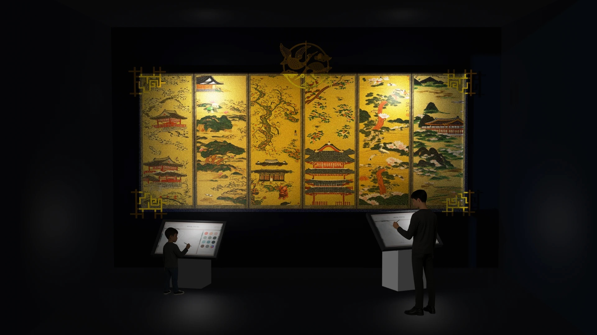
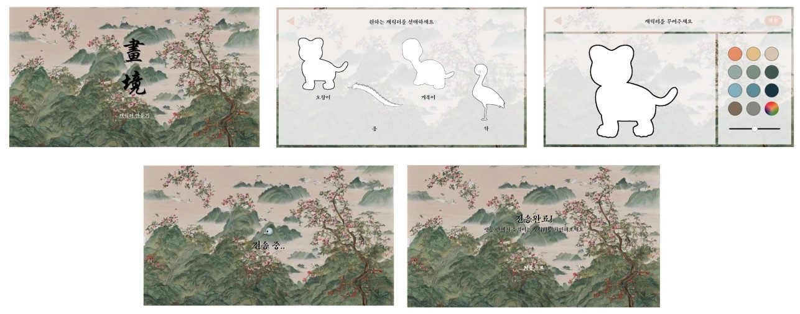
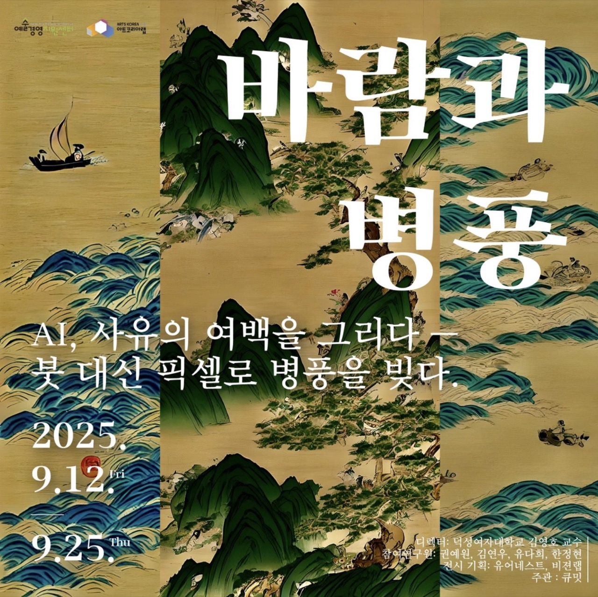
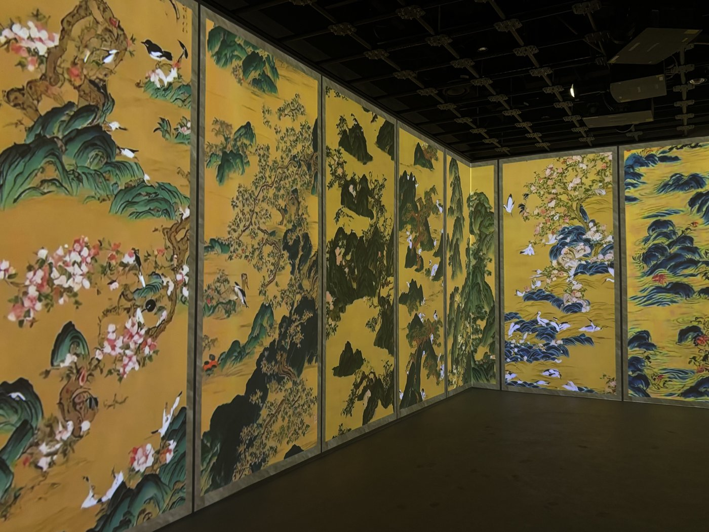

KWON YEWON
보이지 않는 구조를 설계해 보이는 장면으로 만듭니다.
Computer Graphics · Generative AI · 3D Vision · XR
Projects
Projects
V-O
iOS로 스캔한 실내 공간을 VR로 옮기고, LLM이 만든 배치 조건과 최적화 로직으로 가구 배치를 조회 · 편집하는 공간 분석 플랫폼 (졸업 프로젝트)
화경
AI로 생성한 병풍 배경과 사용자가 채색한 3D 동물이 실시간으로 상호작용하는 인터랙티브 미디어아트 (모온컴퍼니 협업)
FingerType
웹캠 · 동영상에서 ASL 알파벳을 인식해 텍스트로 변환하는 웹 앱
Mediary
채팅으로 하루를 기록하고 기억으로 연결하는 개인 맞춤형 AI 아바타 일기 서비스
Publication
Study
V-O
iOS로 스캔한 실내 공간을 VR로 옮기고, LLM이 만든 배치 조건과 최적화 로직으로 가구 배치를 조회 · 편집하는 공간 분석 플랫폼 (졸업 프로젝트)
iOS 앱 — 공간 스캔 → 가구 배치 최적화
VR 앱 — 저장된 배치를 불러와 가구 이동 · 새 버전 저장


앱 화면 — iOS 공간 스캔 · 배치 최적화 결과 · VR 편집
- Period
- 2026.03 –
- Stack
- Python · FastAPI · AWS (EC2, RDS, S3) · PostgreSQL
- My part
-
- 가구 배치 최적화 로직 구현 — 평면 분석 기반 배치 원칙 추출, 최적화 연산
- LLM 기반 배치 조건 생성 — 방 구조 · 가구 정보에서 사람의 판단이 필요한 배치 관계를 만들어 최적화의 보조 제약으로 반영
- 건축 설계 자료에서 배치 규칙을 찾는 RAG 파이프라인 구현 — 문서 임베딩(BGE-M3)과 pgvector · 전문 검색을 결합한 하이브리드 검색
- 최적화 · 공간 처리 파이프라인을 FastAPI 서버로 묶어 AWS(EC2 · RDS · S3)에 배포 · 운영 — 데이터 버전 · 처리 상태 관리, GitHub Actions 자동 배포
- Architecture
시스템 구조도 — iOS · VR 클라이언트, AWS 위 FastAPI 서버, Claude API
- Point
-
- 문제규칙 기반 최적화만으로는 의자 – 테이블 매칭, 벽 부착, 창문 · 문 주변 공간처럼 사람의 판단이 필요한 배치 품질 문제가 남음
- 해결규칙 기반 배치가 실패했을 때 Claude API로 방 구조 · 가구 정보에서 "어떤 의자를 어느 테이블에 둘지", "어떤 가구를 벽에 붙일지" 같은 배치 조건을 생성해 최적화 로직에 보조 제약으로 반영, 평면도로 기존 결과와 비교하며 반복 조정
- 결과AI는 사람처럼 판단해야 하는 조건만 만들고, 충돌 · 거리 · 회전 계산은 기존 최적화 로직이 맡는 구조로 정리
- Explore
-
더 사실적인 공간 · 가구 복원을 위해 시도했지만 최종 결과물에는 채택하지 않은 방법들
- 영상 기반 3D 공간 복원 — 방 영상을 ffmpeg로 프레임 추출, COLMAP SfM(SIFT 특징점 · 매칭 · 카메라 추정)으로 희소 포인트 클라우드를 만든 뒤 공식 3D Gaussian Splatting 코드로 학습 · 렌더링
- 3D 객체 분할 전처리 — RoomPlan 스캔(USDZ)을 GLB로 변환하고, Blender 4.4와 호환되지 않던 SAMPart3D 렌더 스크립트를 수정해 16개 시점의 컬러 · 깊이 이미지와 카메라 정보 생성
- 가구 분리와 3D 생성 — SAM으로 가구 마스크를 만들고 LaMa로 빈 곳을 채운 뒤 Hunyuan3D-2.1로 이미지 → 3D 메시 생성 시도. 가려진 가구 형태를 이어 그리기보다 빈 곳을 무난히 메우는 보간 수준임을 확인
- Next
- 여러 방법으로 방을 3D로 재현하며 가려진 부분은 생성 모델로도 자연스럽게 복원되지 않는 한계 확인 — 이 문제를 그래픽스와 생성 AI로 더 깊이 다뤄 보고 싶어진 계기
화경
AI로 생성한 병풍 배경과 사용자가 채색한 3D 동물이 실시간으로 상호작용하는 인터랙티브 미디어아트 (모온컴퍼니 협업)


전시 구성 시안 · 앱 목업 — 키오스크에서 채색한 동물이 병풍 화면에 3D로 등장

터치스크린 앱 화면 흐름 — 시작 → 동물 선택 → 채색 → 전송 → 완료
- Period
- 2025.06 – 2025.08
- Stack
- Python · Stable Diffusion v1.5 (LoRA) · Unity (C#) · UDP · Plastic SCM
- My part
-
- 민화 · 명소 이미지 약 40장 수집 · 전처리, LoRA 공동 학습과 강도값 비교
- 터치스크린 앱 제작 — 동물 선택, 채색, 저장, 전송
- 터치스크린 앱과 병풍 디스플레이 앱 간 UDP 통신 구현
- Architecture
데이터 흐름도 — 이미지는 공유 폴더, 전송 신호는 UDP · ACK
- Point
-
- 문제터치스크린 앱과 병풍 디스플레이 앱이 따로 실행돼 저장 · 반영 시점을 서로 알 수 없음
- 해결이미지는 공유 폴더, 알림은 UDP로 분리 · 수신 큐에서 메인 스레드 처리 · ACK 회신
- 결과전송 후 터치스크린에 "전송 완료" 표시, 디스플레이에 동물 반영
- Related
- 전통 병풍 디지털 재현 연구 →
FingerType
웹캠 · 동영상에서 ASL 알파벳을 인식해 텍스트로 변환하는 웹 앱
시연 영상 — 웹캠으로 손 모양을 인식해 알파벳 입력
- Period
- 2026.05 – 2026.06
- Stack
- Python · YOLOv8n · MediaPipe · OpenCV · Streamlit (webrtc) · Roboflow
- My part
-
- 정적 알파벳(A–Y) YOLOv8n 모델 재학습 — Roboflow 데이터셋 버전별 augmentation · 샘플 구성 변경
- 웹캠 테스트에서 반복 혼동된 글자에 직접 촬영 데이터 보강
- Streamlit UI — 실시간 웹캠 · 동영상 업로드 인식, 신뢰도 · 글자 확정 프레임 조정
- Point
-
- 문제웹캠 테스트에서 특정 글자가 반복적으로 혼동됨
- 해결혼동 글자에 직접 촬영 데이터 보강, 데이터셋 6개 버전을 mAP50 · mAP50-95 · latency로 비교
- 결과직접 촬영 데이터 추가 시 val mAP50 0.946 → 0.968
Mediary
채팅으로 하루를 기록하고 기억으로 연결하는 개인 맞춤형 AI 아바타 일기 서비스


앱 화면 — 사진과 대화로 일기 기록 · 영상용 캐릭터와 목소리 선택
- Period
- 2026.07 – 2026.08
- Stack
- Python · FastAPI · PostgreSQL (pgvector) · CLOVA Studio · Streamlit
- My part
-
- 일기 챗봇 파이프라인 — 텍스트 · 사진 · 음성 입력 처리와 CLOVA Studio 대화, 일기 생성 흐름 연결
- 일기 품질 규칙과 확인 단계 — 원문 근거 기반 감정 반영, 사람 · 장소 · 감정 정보 확인을 백엔드 로직으로 구성
- 일기 버전 · 승인 흐름 — 후보 생성, 선택, 확정, 승인본 저장, DB 연동
- Point
-
- 문제AI가 사용자가 말하지 않은 감정을 추론하거나, "여유롭고 좋더라고" 같은 활용형 감정을 문자열 불일치로 제거
- 해결감정마다 근거가 되는 원문 발췌를 함께 저장하고, 그 발췌가 실제 사용자 입력에 있는지 백엔드에서 검증 · 정상 / 실패 사례 회귀 테스트 추가
- 결과근거 없는 감정 추측은 차단하고, 직접 표현한 감정은 놓치지 않는 근거 기반 처리 구조 마련
전통 병풍의 디지털 재현 및 확장 연구: 디지털 병풍 사례를 중심으로
IJASC (The International Journal of Advanced Smart Convergence) · 2025, vol.14, no.4 · 3저자
민화 산수 이미지 70장으로 Stable Diffusion v1.5에 LoRA를 학습해 전통 병풍을 디지털로 재현 · 확장하는 재현 가능한 생성형 AI 프레임워크를 제안하고, 산 · 물 · 통합 장면 세 작품으로 전시한 연구. IXR Lab 학부 연구원(25.03 – 25.12)으로 참여.
[바람과 병풍] 전시 영상 — 생성한 병풍 이미지에 모션을 준 영상


[바람과 병풍] 포스터 · 현장 — 아트코리아랩, 2025.09
전주대 쇼케이스 전시 영상 — Hokuyo 나비 터치 인터랙션은 현장 센서 설치 불가로 영상에 미포함

전주대 쇼케이스 전시 공간 — 전주대학교 X Space, 2025.11
- Paper
- DOI 10.7236/IJASC.2025.14.4.305 ↗ · KCI ↗
- Lab
- IXR Lab ↗ · 학부 연구원 · 2025.03 – 2025.12
- Authors
- 김영호, 한정현, 권예원, 김연우, 유다희
- Title (EN)
- A Study on the Generative AI Reproduction of Traditional Folding Screens: Focusing on Digital Folding Screen
- Journal
- The International Journal of Advanced Smart Convergence (IJASC), 2025, vol.14, no.4, pp.305–312 · 국제인공지능학회
- Award
- 2025학년도 덕성여자대학교 과학기술대학 학술제 우수상 (3인 팀) · 2025.11
- Point
-
- 데이터민화 산수 이미지 70장 — CLIP 유사도(코사인 0.985) 기반 중복 제거, ViT 태깅 후 수동 보정
- 실험LoRA 학습 후 Sampling Steps · CFG Scale 조합 비교
- 결과25 steps · CFG 7.0–7.5 구간 도출, 산 · 물 · 통합 장면 3개 작품 전시
- My part
-
- 민화 이미지 수집 · 전처리 — CLIP 유사도 기반 중복 제거, ViT 태깅 후 수동 보정
- 오픈소스 학습 코드(kohya-colab) 기반 LoRA 학습 설정 · 학습량 계산
- 프롬프트 설계와 Sampling Steps · CFG Scale 파라미터 실험
- AI 영상 제작 — Gemini · Deevid AI 비교, 고정 카메라 루프 영상 생성 ([바람과 병풍])
- 관람객 인터랙션 개발 — Hokuyo 센서로 나비 터치 시 파티클 효과 (전주대 쇼케이스용, 현장 센서 설치 불가로 미적용)
- 전시 구성, 논문 · 학술제 발표 자료 작성
- Exhibition
- [바람과 병풍] ↗ · 아트코리아랩 · 2025.09.12 – 09.25
디지털 병풍 쇼케이스 ↗ · 전주대학교 X Space · 2025.11 - Architecture
[바람과 병풍] 생성 파이프라인 — 데이터 정제 → LoRA 학습 → 이미지 생성 → 영상화
전주대 쇼케이스 시스템 구조도 — 오프라인 LoRA 학습 · 런타임 Unity 병풍 제어
- Related
- 화경 →
지식그래프 스터디
대화 데이터로 키워드 · 벡터 · 그래프 검색을 직접 구현해 비교한 스터디
- Period
- 2026.09 – 2026.10
- Context
- Cloud Club 10기 스터디
- Done
-
- 키워드 검색(BM25)과 벡터 검색을 구현해 결과 비교
- LLM으로 문장에서 "누가 · 무엇과 · 어떤 관계"를 뽑아 Neo4j 그래프로 저장
- 벡터 검색으로는 답하기 어려운, 여러 단계를 거치는 질문을 그래프로 찾아보기
About
 profile.jpg
profile.jpg
KWON YEWON
Prospective graduate student · Computer Graphics, Generative AI & XR
전체 구조를 설계하는 일과 시각적으로 표현하는 일을 모두 좋아합니다. 지금까지 생성 모델로 전통 병풍을 재현해 전시하거나, 실내 스캔 데이터를 VR 공간으로 옮기는 프로젝트를 해 왔습니다. 두 작업 모두 여러 기술을 엮어 하나의 장면을 만들어 낸다는 점이 인상 깊었습니다. 실제 공간과 사물을 3D로 이해하고 만들어 내는 기술, 그리고 그 결과를 XR에서 사람이 직접 경험하게 하는 과정에 관심이 많습니다. 앞으로도 그래픽스와 생성 AI를 꾸준히 공부하며 관심 분야를 넓혀 가고 싶습니다.
2027.02 졸업 예정
GPA 4.1 / 4.5 · 학과 수석 (2023-2, 2026-1)
Skills
Experience & Achievements
IXR Lab ↗ 학부 연구원 — 전통 병풍 디지털 재현 연구
Interactive eXperience Research Lab · 덕성여자대학교 김영호 교수 연구실 (현재 서울여자대학교로 이전) · XR 인터랙션, 생성형 AI, 인터랙티브 미디어
- Paper「전통 병풍의 디지털 재현 및 확장 연구: 디지털 병풍 사례를 중심으로」 ↗ · IJASC · 3저자 · 26.01
- Award과학기술대학 학술제 우수상 · 덕성여자대학교 · 25.11
- Exhibition
디자인 글로벌 코딩학원 ↗ 강사
Python · Java · Arduino · App Inventor 기초 교육 보조, 학생 프로젝트 디버깅 지도
SQL 개발자 (SQLD)
한국데이터산업진흥원
Contact
연구 · 프로젝트 관련 이야기라면 언제든 편하게 연락 주세요.